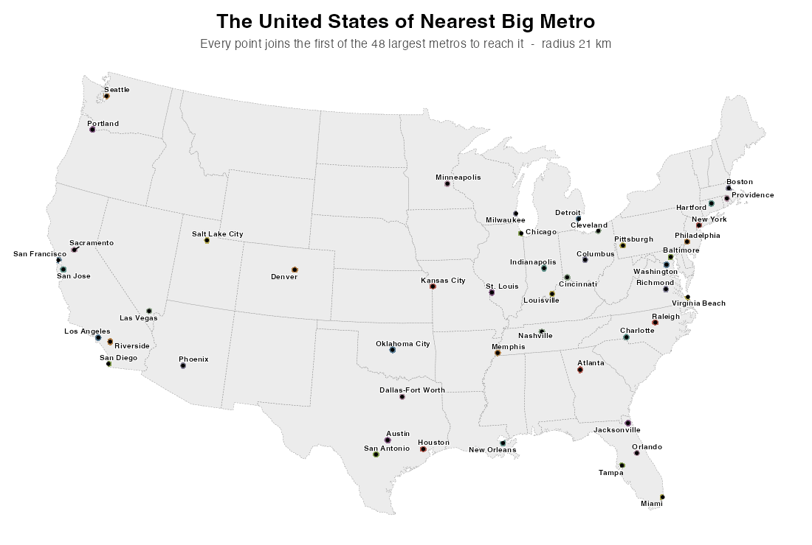
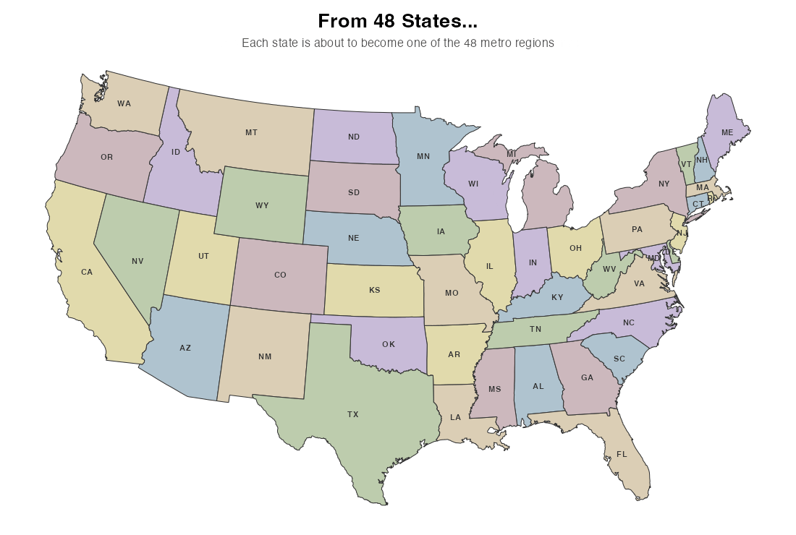

How the borders form
Grow a circle out from every metro at the same speed. Wherever two circles meet, that's a border. Each region ends up being exactly the land its city reaches first. The last place to fill in is north-central Montana, about 1,030 km from the nearest big metro.

From 48 states to 48 metros
Same number of pieces, cut very differently. Each state is paired with one metro region, choosing pairs that overlap and keep the total movement small, and then slides and reshapes into it. The Mountain West collapses into a few giant regions run by Denver, Salt Lake City and Phoenix, and the whole map drifts toward the coasts, where the big metros are. See every pairing.
The ledger
All 48 regions
Click a column to sort. Showing the metro-area version.
| Rank | Region | Population | Territory (km²) | People per km² of territory | About the size of |
|---|
Methods
How this was made
The 48 places
The main map uses the 48 most populous Metropolitan Statistical Areas in the 2020 Census. Each one is pinned to its first-named principal city, so Dallas–Fort Worth sits at Dallas and Riverside–San Bernardino at Riverside. Honolulu (about 55th) and Anchorage fall below the cut, so all 48 are in the contiguous states.
The alternate version uses the 48 largest cities by population inside city limits. That produces oddities like separate regions for Mesa, Long Beach and Oakland, while St. Louis, Pittsburgh and Tampa get none.
The third version gives every state exactly one seat: its largest city by population inside city limits. Big interior cities like Albuquerque, Billings and Boise end up with huge regions. New York keeps only 1.6% of New York State, squeezed between Newark and Bridgeport. How much of its own state each city keeps.
The equal-population version is different: no cities are chosen in advance. The lower 48 are cut into 48 compact states of about 6.86 million people each, using 2020 Census tract populations. It starts from a weighted Voronoi diagram, where each state's center is moved toward its own center of population and its weight is tuned until the populations even out. Then a few border tracts are traded between neighbors to finish the job. Every state lands within 0.5% of the target, and each is named after the largest city inside it.
The borders
The lower 48 were divided into a 2 km grid. Each cell goes to the closest city by great-circle distance (straight-line distance over the curved Earth), and the cells are merged into polygons and clipped to the coastline. The result is a spherical Voronoi diagram. It ignores population size, roads, mountains and travel time: Seattle and Riverside count the same.